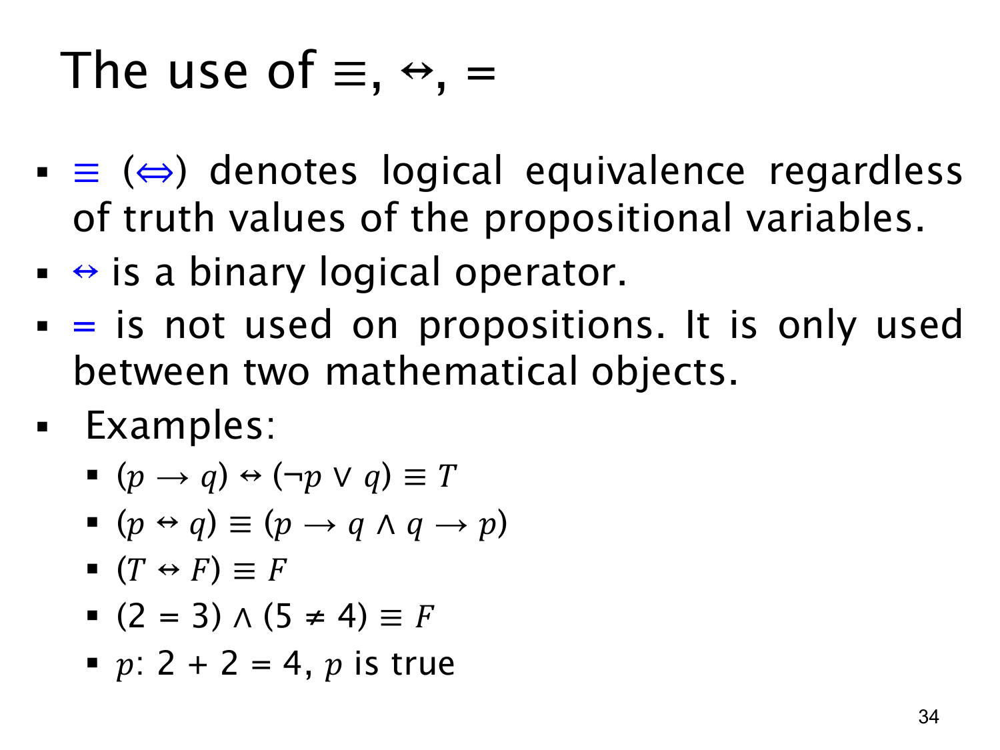

L1.1 · 第 34 页讲解原文
查看这一页课件

区分“逻辑等价”“双条件”和“相等”
这页并排比较三个外形相近、用途不同的符号。按本课件的记号，A≡B（也可写 A⇔B）是在断言两个命题表达式逻辑等价：无论变量怎样取值，两边总有相同真值。A↔B 则是一个二元逻辑运算，其结果本身是命题，在具体赋值下可能真也可能假。普通的 = 用于比较两个数学对象，例如 2+2=4；这个等式整体可以是一个命题，但本课件不用 = 直接写“两个命题逻辑等价”。
课件的例子可以逐个读：
- (p→q)↔(¬p∨q)≡T：蕴含与“非 p 或 q”在每种赋值下都相同，因此它们的双条件恒真。
- (p↔q)≡((p→q)∧(q→p))：双条件要求两个方向的蕴含都成立。课件右侧没有把两个箭头分别用括号圈出；写成这里的形式更不易误读。
- (T↔F)≡F：一真一假的双条件为假。
- (2=3)∧(5=4)≡F：第一部分是假，第二部分是真，合取结果是假。
最后一行设 p 为“2+2=4”，所以 p 是真命题。这里 2+2=4 用 = 比较数字；p 是给整个判断取的命题名称。读复杂式子时，先分清符号作用在哪一层：是在计算命题的真值，还是在陈述两种写法在所有情况下都等价。